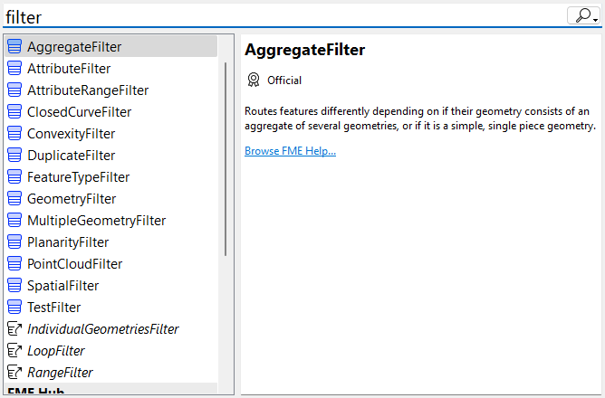
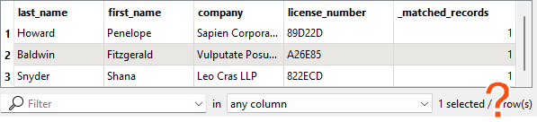

You don’t have to follow along with Jennifer using FME in this lesson. Instead, read her story and then do the exercise yourself.
After completing this lesson, you’ll be able to:
You don’t have to follow along with Jennifer using FME in this lesson. Instead, read her story and then do the exercise yourself.
When Jennifer first began using FME, she found the list of almost 500 transformers daunting. One of the most common challenges new FME users face is finding the correct transformer for a given task. However, Jennifer learns that most users only focus on the subset of transformers relevant to their day-to-day workflow. Since Jennifer doesn’t plan on working with raster data, there is a whole category of raster-dedicated transformers that she doesn’t need to know. She knows she doesn’t need to be familiar with every transformer to use FME effectively.
As she learned FME, Jennifer found the following resources helpful in learning about transformers:
| Resource | Why use it? |
| Searching using Quick Add in FME Workbench | Quickly search transformers, see the Help, and add to the canvas to try them out. |
| Browsing or searching using the Transformer Gallery in FME Workbench | Filter transformers by category and search directly in Workbench. |
| Using the FME Transformer Reference Guide | Contains snippets from Help to explain transformer use cases. |
The Scenario
Jennifer continues to work on her workspace. The next step is to filter out records with revoked business licenses. These revoked licenses are stored in a PostgreSQL database.
Jennifer knows there are a few steps that need to happen to accomplish her goal:
She also knows two things:
Jennifer decides to start by looking in the Workbench Transformer Gallery categories. She sees the Filters and Joins category:

She could look through the transformers here individually and read their Help pages to learn more, but she thinks that might take too long.
Second, she tries searching for some keywords in Quick Add. She opens her workspace and starts typing keywords. First, she tries “filter and join,” but this search is too specific and doesn’t yield any attribute-related results. By default, Quick Add searches for transformer names only, not descriptions. She presses the Tab key to search in the Help text, which results in transformers that don’t meet her requirements.
She tries some more keywords in both search modes: “filter,” “merge,” and “join.” These return some transformers that sound promising.

She scans the attribute transformers and their descriptions. This method produces a promising result...
Jennifer adds the mystery transformer via Quick Add. She connects it to her workflow, sets the parameters, and finds it does just what she wants.
If Jennifer’s use case had been more complex, she might have considered using the Transformer Reference Guide or posting it on the Community Forums for help.
⭐ New in FME 2024.1 and 2024.2: we've updated Quick Add to make finding the right transformer even easier.
- 2024.1
- Introducing filtering: you can now filter results by Item Type (Transformer, Reader, Writer), Publisher Type (Official, Verified, Community), and optionally by Category (3D, Attributes, Calculated Values, etc.).
- Sorting options: Beyond the default alphabetical sorting, users can opt to sort items by Popularity, based on the number of downloads or usage frequency on the canvas, facilitating quicker access to popular tools, and supporting new users in learning core options.
- Streamlined interface: The update reduces clutter by hiding aliases from search results and revising the right-hand information panel to prioritize decision-making content.
- 2024.2
- Improved search: results are sorted by relevance by default. Improving search accuracy by handling mistyped terms, expanding keyword matches, and suggesting related transformers makes it easier to find exactly what you're looking for
Check out a summary of these changes in a video:
If you have time, please fill out this survey on the new Quick Add.
You’ve read about Jennifer’s search for her transformer. Now you have to find it!
Using the techniques above and the starting workspace (in FME Workbench 2024.0 or later), find a transformer that will accomplish her goals:
Here are some clues:
Once you find the transformer, connect it between the AttributeManager and the BusinessOwners writer feature type and configure it. You can use Visual Preview with feature caching to confirm the correct results. Your output will have two streams of features.
Features with a revoked_license:

Features without one:

Ensure you connect the correct stream of features to the writer feature type. Remember, we want to filter out features with revoked licenses and not write them out.
You can view the solution by downloading the complete workspace or reading the next lesson.
Database Connection Details
Database connections save authentication information for databases. FME also has web connections to connect to web services and APIs. They are stored on the user’s operating system profile or network drives to store authentication information separately from the workspace. They can also be published to FME Flow so users can share them without exposing passwords.
From here, you must fill in the database connection details, shown below.
If you are taking a Safe Software-hosted training course, choose the existing database connection from the drop-down (FME Training PostGIS Database) instead of creating a new one.

She clicks Test and then Save. FME tests the connection and confirms that it is working.
The table you need to connect to is public.revoked_licenses.
If you have problems connecting to the database, you can use this backup CSV file: revoked_licenses.csv (C:\FMEData\Resources\IntegrateDataWithTheFMEPlatform\revoked_licenses.csv).